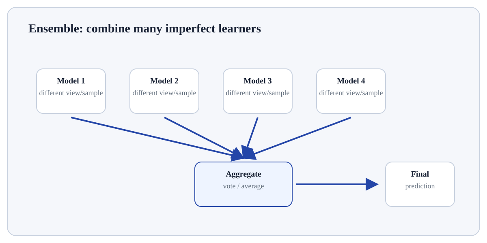

Follow the transformation
Draw bootstrap samples of training rows for different trees.
At each split, consider only a random subset of features.
Grow many trees (often deep) independently.
Bagging and Oob Intuition is an ensemble method based on many decorrelated decision trees.
Bagging and Oob Intuition is an ensemble method based on many decorrelated decision trees. Bootstrap sampling and random feature subsets create diversity; averaging/voting reduces variance compared with a single deep tree.
Bagging and Oob Intuition matters because tree models learn nonlinear threshold rules and interactions with little preprocessing, but unconstrained trees can have high variance. Ensembles and pruning trade interpretability, variance and computational cost in different ways.
Treat this as a sequence of observable decisions rather than one opaque command. Stage 1: Draw bootstrap samples of training rows for different trees. Stage 2: At each split, consider only a random subset of features. Stage 3: Grow many trees (often deep) independently. Final checkpoint: Use out-of-bag samples as an internal estimate for some diagnostics while still keeping a separate final evaluation design.
Draw bootstrap samples of training rows for different trees.
At each split, consider only a random subset of features.
Grow many trees (often deep) independently.

# Step 1 — Import only the named objects needed by the following steps, keeping dependencies explicit.
from sklearn.ensemble import RandomForestClassifier
# Step 2 — Compute the right-hand expression and store its result in `X` for the next step.
X=[[0],[1],[2],[3],[4],[5]]; y=[0,0,0,1,1,1]
# Step 3 — Fit the model or transformer, learning its parameters from the supplied training data.
m=RandomForestClassifier(n_estimators=50, random_state=0, oob_score=True, bootstrap=True).fit(X,y)
# Step 4 — Display the current value explicitly so the result/state can be inspected during execution.
print(round(m.oob_score_,3))An out-of-bag estimate is produced from samples not used to fit each tree; it is useful diagnostic evidence, not a replacement for a final independent evaluation.
For Bagging and Oob Intuition, connect the reported result to the exact training/validation/prediction step that produced it and check one prediction, fold or metric component independently.
BaggingAverages models trained on resampled data.Random forestBagging + random feature subsets at splits.Single treeHighly interpretable path but less stable.BoostingBuilds learners sequentially to correct previous errors rather than independently averaging them.Use Bagging and Oob Intuition when its inductive assumptions fit the feature/target structure and it can be compared fairly with a simpler baseline on unseen data.
Prefer a simpler or different model when the sample size, representation, computational budget, interpretability requirement or data geometry conflicts with this method.
Build a tiny, inspectable example of Bagging and Oob Intuition. First draw bootstrap samples of training rows for different trees. Then at each split, consider only a random subset of features. Write the expected result before running it, and explain one condition that would make the result misleading or invalid.
Before trusting a result from Bagging and Oob Intuition, which check provides the strongest evidence that you understand and applied it correctly?
Step 1Draw bootstrap samples of training rows for different trees.Step 2At each split, consider only a random subset of features.Step 3Grow many trees (often deep) independently.Step 4Average regression predictions or class probabilities/votes.